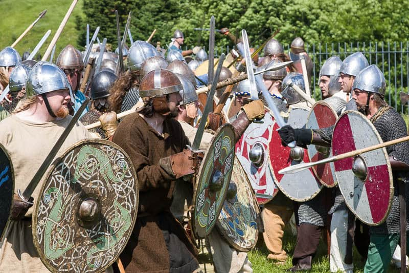
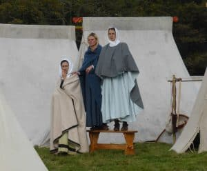
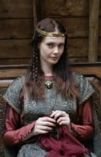
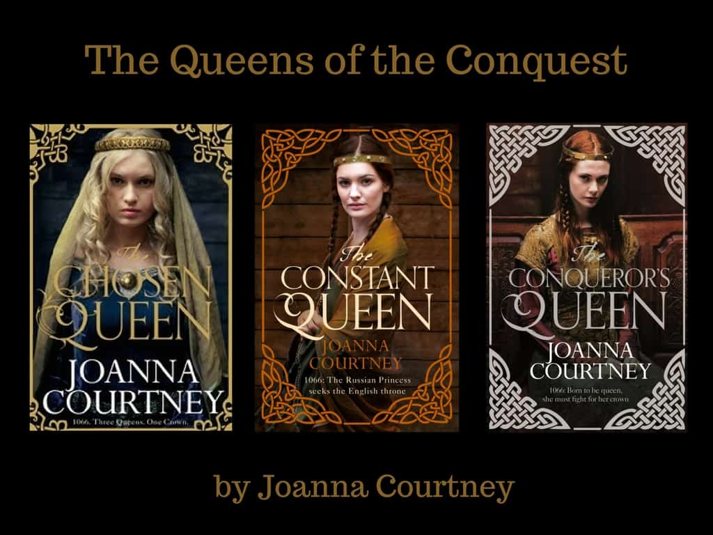

The Forgotten Queens of 1066 – Capturing the female side of history


The Battle of Hastings is surely one of the most rollocking male historical events out there? Crammed full of blood and gore, swords and shields, Williams and Harolds, it is a gloriously testosterone-fuelled drama. And yet is this the full story? Is there not, indeed, half of it missing? Where were all the women where this fighting was going on? Did they truly all just sit at home weaving and waiting to find out what had happened? Of course not!Women may be something of a rarity in history – supposedly shy, domestic creatures who peep out between the cracks of their husband’s ‘greater’ deeds - but anyone who has ever lived with a mother/ sister/ auntie/ girlfriend/ wife/ daughter will know that very few women really stand quietly in the background of life! I see no reason why this would not have been every bit as true in the past as it is now.
Armies, it is inescapably true, were made up of men and I am not trying to deny that. Battles, however, are not just won on the field but in the preparation, both physical and political, that leads up to them. On a day-to-day level women would have been involved in the provisioning, medical aid and, shall we say, 'comfort' of men facing the horrors of fighting. But at the highest levels, they could do so much more. There were three men fighting for the throne of England in 1066 and all three had wives who were highly intelligent, politically savvy and used to wielding great influence. As the men on Hastings field lifted their weapons to begin the greatest fight in English history, they were also busy behind the scenes:
Edyth, King Harold's wife and sister of the two great lords of the North, had held York for her husband as he marched to liberate it from the invasion of the Viking, Harald Hardrada and remained a key rallying figure in holding England together against the invaders.
Elizaveta of Kiev, Hardrada's wife, had sailed with him and was waiting in the Orkneys with her two daughters to step up and take the throne she would have fully expected, based on her near-legendary husband's great repute as a warrior, to win. With brothers and sisters ruling many of the great countries of Europe she was ready to take England into a new continental age.
Mathilda of Flanders, William's wife, was running Normandy for him whilst he was away on the most audacious invasion of the age. Her political credibility as a royal of Flemish and French blood and her great personal intelligence had helped him to stabilise his tiny duchy to the point where he could dare to dream of the English throne and she was crucial to his campaign.
So how come we've barely heard of these women? How come they've been cut out of the intricate story of 1066 with one swipe of a bloody sword? Are we so blinded by battle that we cannot see behind it to the far more fascinating twists and turns of the politics that got all those poor men onto that muddy field in the first place?
Quite simply, history was written by men and there's not much we can do about that - except to now try and reclaim what we can find of the female side of the story. The three heroines of my books were all educated young woman, brought up at the heart of powerful courts. They would have understood the problems facing their husbands and would be a logical person to talk them over with. These were not women to underestimate, however little we may know about them, so who were they?

Edyth, heroine of The Chosen Queen, was the only daughter of the powerful Earl of central England and became Queen of Wales at the age of 14. She reigned for 9 years and gave birth to 3 heirs before losing her husband to the English and returning to her homeland. Back there, still only 23, she was the only woman powerful enough to help Harold join North and South to make England strong enough to resist invaders. Edyth was carrying Harold’s son when he died on Hastings field and had history been the turn of a sword different, she could have been the mother of a line of kings stretching who knows how far.

Elizaveta, heroine of The Constant Queen, was a fiery and elegant Princess of Kiev. Born of royal Rus blood on her father’s side and Scandinavian on her mother’s, she was brought up to be a ruler. Having won the heart of Harald of Norway when he was exiled to her father’s highly influential court, she was at his side both when he reclaimed his own country and when he set sail to conquer England. A woman of drive and energy, she fuelled her husband’s ambitions and, with a network of sisters in all the royal courts of Europe, could have made England a highly cosmopolitan queen.

Finally, Matilda, heroine of The Conqueror’s Queen, was the eldest daughter of the politically canny Baldwin of Flanders and, with French royal blood flowing in her veins from her mother’s side, was also raised for a high place in the world. Although initially unwilling to marry Duke William because of his bastardy, she soon recognised in the young ruler a fierce and proud ambition to match her own. Together they set out to master Normandy and, eventually, to conquer England, the country they’d been promised by King Edward. As a great-great-great-great-granddaughter of Alfred the Great, Matilda gave William a vital pedigree in his claim to the throne, but as his wife she also gave him culture, stability and credibility to make him the viable ruler he became. The victory in 1066 was not just his, but theirs.
These women were rivals in 1066 and they were battling every bit as hard as the men, if not with swords then with the traditional women’s weapons of words, influence and care. They may not have known each other but they did know that their own success would necessarily be at the expense of the others and so it eventually proved. By the end of 1066 there would be two exiled widows and one queen. Did the best woman win? You’ll have to read my books to decide but I do hope that in doing so you can help recover a little of these amazing women who should not have been lost to history.
